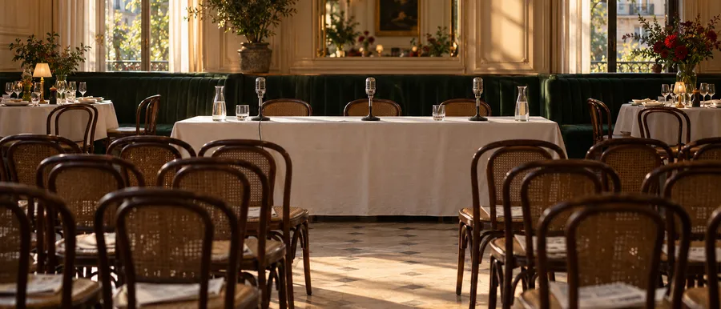

Salle de presse13 communiqués
Salle de presse
Vous êtes journaliste, blogueur ou passionné·e de food ? Cette salle de presse est faite pour vous. Explorez les dernières actus, les projets marquants et les visuels. Contactez-nous pour toute collaboration ou interview.
- Contact presse
- Caroline Corbiau
- Dernier communiqué
- 22 octobre 2026
- Abonnement
- Recevoir les communiqués par e-mail ↗

Aucun communiqué ne correspond. Essayez un autre mot, ou revenez à « Tous ».